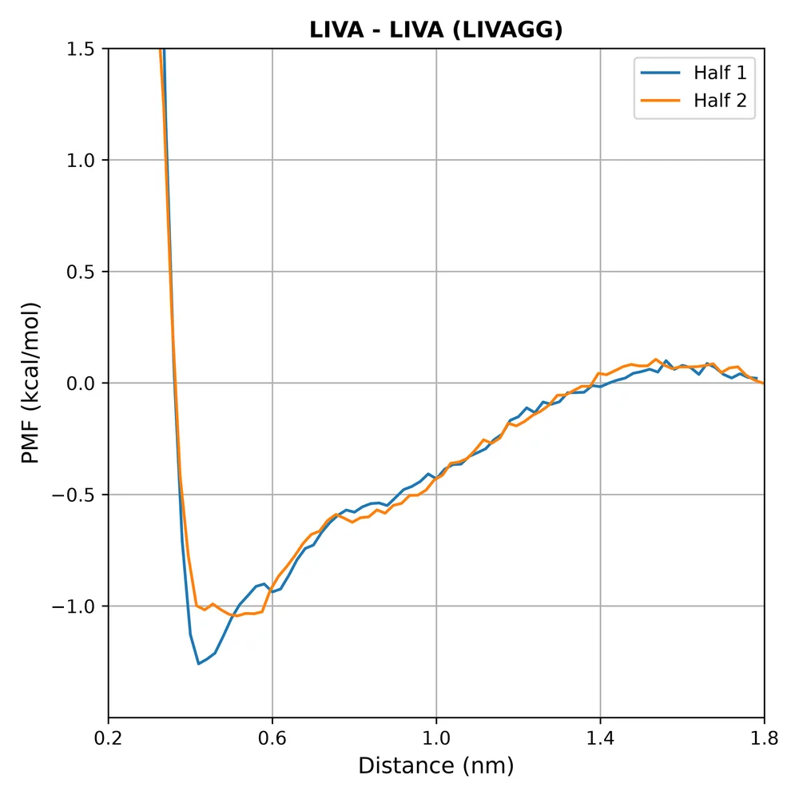
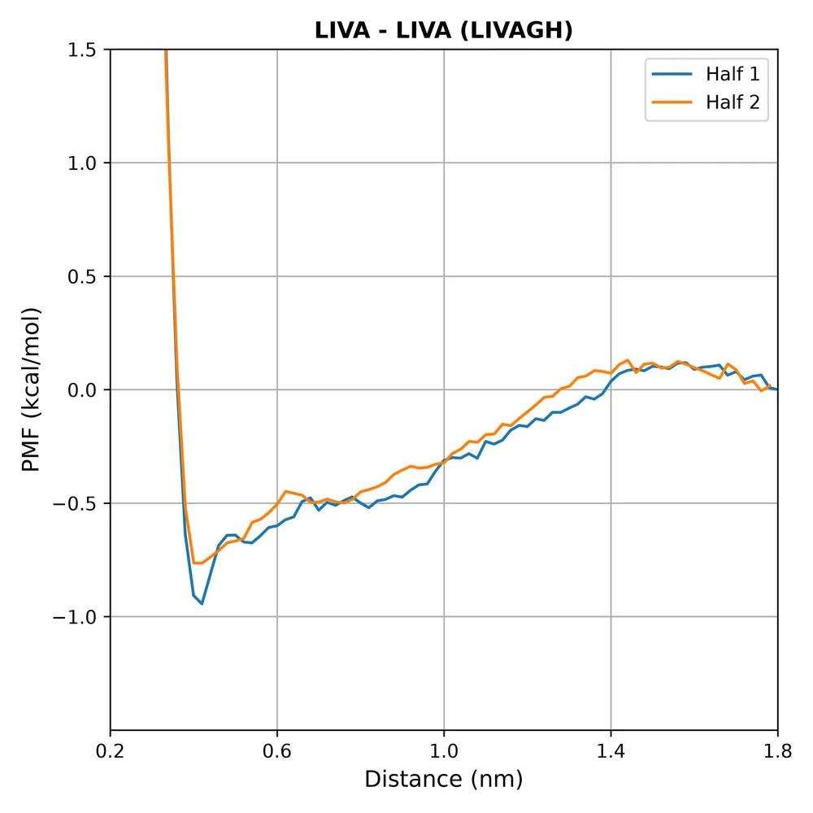
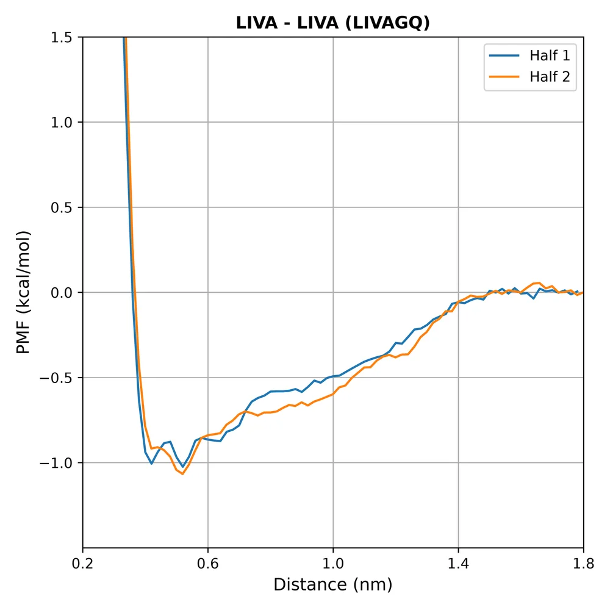

Compare / LIVA–LIVA fragment PMF, both halves
LIVA–LIVA fragment PMF, both halves
PMF of the distance between the LIVA fragments of the two peptides (residues 2–5 vs 10–13), first vs second half, 0.02 nm bins, zero at 1.8 nm.
Columns
Show









Related new figures
- LIVA–LIVA contact frames per trajectory half · Halved structure
- LIVA–LIVA fragment PMF, all systems · Across systems
- LIVAGE protonation states compared · Across systems
- Angle between the peptide-1 and peptide-2 backbone vectors (LIVA–LIVA contact frames) · Halved structure
- Well depth relative to LIVAGG (X = Gly) · Across systems